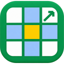

GSheet++A Chrome extension for Google Sheets. It highlights the entire row and column of the active cell, and turns the references in your formula bar into links you can click to jump straight to that cell — across tabs.
Add to Chrome — freeOpen source, MIT licensed. No account, no analytics, no network requests.
Google Sheets tints only the row and column headers for the active cell. On a wide budget or forecast sheet those headers are off-screen, and it becomes genuinely hard to tell which cells line up with the one you selected. Excel users know the effect as focus cell.
GSheet++ highlights the whole row and column in a configurable tint that blends with the page, so text, gridlines and your own cell fills stay readable underneath. Nothing is written to your spreadsheet — no conditional formatting rules, no cell fills, no Apps Script.
Forecast formulas are full of cross-sheet references like ='Q3 Forecast'!E40.
Reading one tells you where a number came from; getting there means hunting through the tab
strip and scrolling.
Hold Alt (⌥ on Mac) and every reference in the formula bar becomes a link. Click it and you land on that cell, in the right tab. This is the everyday half of what Excel calls Trace Precedents, which Google Sheets has no built-in equivalent for.
| Task | Google Sheets on its own | With GSheet++ |
|---|---|---|
| See the active row and column | Only the headers are tinted, and they are off-screen on a wide sheet | The full row and column are highlighted |
| Highlight without changing the file | Conditional formatting works, but writes rules into the spreadsheet and breaks on sort or share | Drawn as an overlay; the file is untouched |
| Jump to a formula's precedent | Press F2, move the cursor onto a reference, press F2 again — undiscoverable, and clumsy with several references |
Hold a modifier and click the reference |
| Retrace a chain of references | Browser Back, if the jump changed the URL | A jump-back shortcut that walks the full history |
GSheet++ has no servers, makes no network requests, and contains no analytics or tracking code. It runs only on Google Sheets and never sees any other site.
That is verifiable rather than a promise. The extension requests no host permission for any
domain other than docs.google.com/spreadsheets, so it could not send data anywhere
even if it wanted to. The only thing it stores is your own settings — colours, toggles and your
chosen shortcut — in Chrome's own settings sync.
Not built in. Sheets has a partial keyboard trick — F2 on the cell, cursor on a
reference, F2 again — which does jump across tabs, but it is undiscoverable and
clumsy on a formula with several references. GSheet++ turns every reference into a link you
click.
There is no built-in setting; Sheets only tints the headers. A conditional formatting rule approximates it but writes rules into your spreadsheet and breaks when you sort or share. GSheet++ draws an overlay instead, so nothing in your file changes.
No. The highlight is drawn on top of the page, and jumping to a reference only moves your cursor. No cell values, formats, conditional formatting rules or formulas are touched.
Yes. A reference such as ='Q3 Forecast'!E40 jumps to the right cell on the right
tab, and the jump-back shortcut retraces a chain of them.
No. GSheet++ runs only on Google Sheets, at docs.google.com/spreadsheets.
No. No analytics, no tracking, and no network requests of any kind. See the privacy policy.
No. The highlight is two positioned elements that follow the active cell, so its cost does not grow with the size of the sheet.